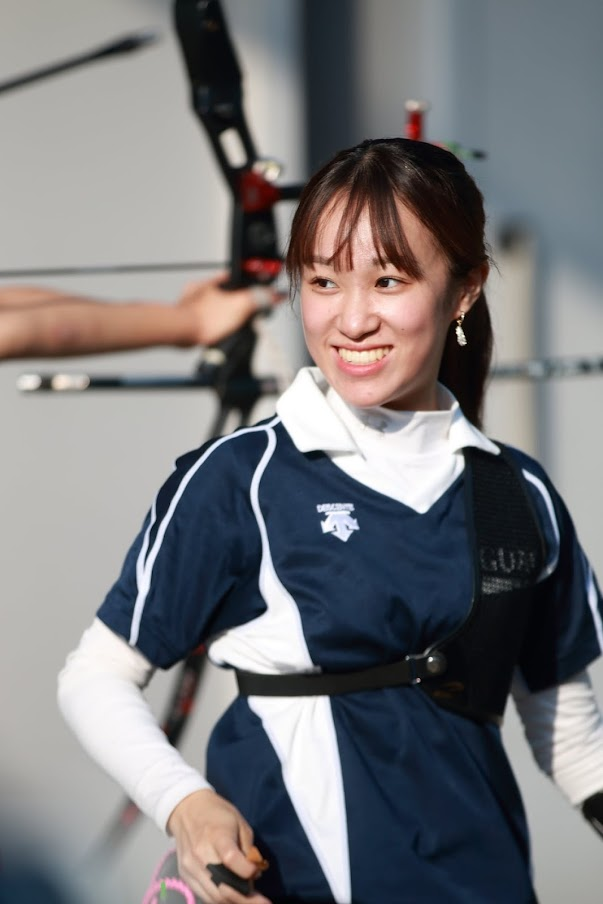

第22回目の今日は法学部政治学科の田中あかりさんです。彼女は習い事としてバレエなどをしています！今回のインタビューでは学業のすすめ方などを話してくれました。
政治学科の良いところは、政治学にとどまらず、社会学など幅広い分野の講義を自分の興味に合わせて、履修できることだと思います。また、現在進行形で起こっている社会問題について考えを深めることができる点も強みだと思います。教職課程も履修しているので、なにか聞きたいことがあったら気軽に相談してください！
何か今までにやったことが無いものに挑戦してみたいと思ったからです。
教職課程を履修しているため、履修科目が多く大変なところもあります。ですが、授業で正規練に参加出来ない時は朝練を行ったり、課題はためずに終わらせていくように心がけたり、試験期間は勉強に集中するなど臨機応変に対応し、メリハリのある生活を行うことが私の両立のポイントです。
あまり触れることの出来ないスポーツに触れることができることだと思います。また、1年生の新人練では先輩方がワンツーマンで指導してくださることも魅力だと思います。
週1~2回です。希望シフト制なので、部活がない日に合わせてシフトを組んでいます。テスト期間などはお休みするなど、私のスケージュールに、とても柔軟な対応を取ってくださる良いバイト先です。
新入生の皆さんご入学おめでとうございます。慣れない環境で不安なことも多いと思いますが、大学入学という機会に何か新しいことに挑戦してみたい！という方は是非アーチェリーを体験してみてください。履修のことや大学生活の中で困ったことがあればいつでも相談してください！一緒に大学生活を楽しみましょう！
いかがだったでしょうか。アーチェリーは今まで知らなかった人も多いとおもいます！ぜひ新歓の時には弓を触りに来てください！！次回は経済学部経営学科の井本花音さんです。